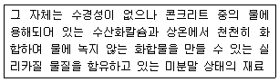
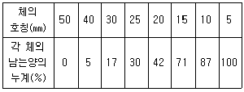
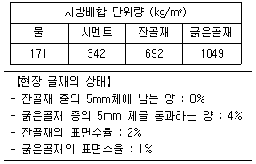
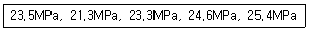
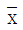
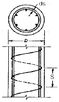
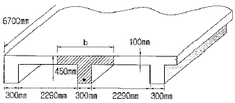
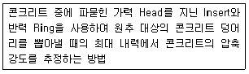
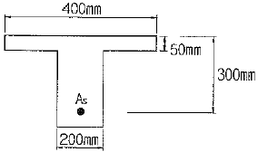

콘크리트기사 (2011-03-20 기출문제)
1과목: 재료 및 배합
1. 시멘트의 제조 방법 중 습식법에 대한 설명으로 옳지 않은 것은?
- 열량 손실이 많다.
- 원료를 미분말화 하기가 쉽다.
- 먼지가 적게 난다.
- 원료 분쇄기에 물을 약 10% 정도 가한 후 분쇄한다.
(정답률: 95%)

2. 아래의 표에서 설명하는 혼화재료의 명칭은?

- 감수제
- 급결제
- 포졸란
- AE제
(정답률: 86%)
3. 시멘트의 비중시험을 통해 알 수 있는 것은?
- 풍화의 정도
- 화학저항성
- 동결융해저항성
- 주요 성분의 구성
(정답률: 74%)
4. 플라이 애시 품질을 규정하기 위한 시험항목이 아닌 것은?
- 염화물이온량
- 강열감량
- 분말도
- 이산화규소
(정답률: 69%)
5. 시멘트 제조 과정에서 시멘트 응결을 지연시키는 역할을 하기 위하여 첨가하는 재료는?
- 석고
- 슬래그
- 지연제
- 실라카(SiO2)
(정답률: 77%)
6. 굵은 골재의 체가름을 하여 다음 표오 같은 결과를 얻었다. 이 골재의 조립률은 얼마인가?

- 3.52
- 7.34
- 8.34
- 8.52
(정답률: 74%)
7. 시방서에 규정된 콘크리트 배합의 표시 사항에 해당되지 않는 것은?
- 골재의 단위량
- 슬럼프
- 공기량
- 혼합수의 염분량
(정답률: 64%)
8. KS L 5110의 시멘트 비중시험 시 광유를 사용하는 이유로 적당한 것은?
- 광유를 사용하면 공기포 제거가 용이하다.
- 광유를 사용하면 시멘트의 수화반응을 억제하여 정확한 측정이 가능하다.
- 광유를 사용하면 비중병 입구에 묻은 광유를 휴지로 제거하기 용이하다.
- 광유를 사용하면 시료를 투입할 때 막힘 현상을 방지할 수 있다.
(정답률: 53%)
9. 아래 표의 시방배합을 현장배합으로 수정하였을 때 굵은 골재량은?

- 1023kg/m3
- 1034kg/m3
- 1044kg/m3
- 1⑤3kg/m3
(정답률: 39%)
10. 보통 콘크리트 배합설계 시 고려해야 할 사항으로 옳지 않은 것은?
- 굵은골재 최대치수가 작으면 단위수량, 단위시멘트량이 커져 비경제적이다.
- 슬럼프 값은 작업이 가능한 범위 내에서 가능한 작게 하는 것이 좋다.
- 운반시간이 길고 기온이 높은 경우는 슬럼프 저하를 고려하여 배합설계를 하는 것이 좋다.
- 단위수량을 작게 하기 위하여 잔골재율을 높이는 것이 좋다.
(정답률: 77%)
11. 골재의 저장 방법에 대한 설명으로 틀린 것은?
- 잔골재와 굵은 골재는 분류하여 저장한다.
- 적당한 배수시설을 설치하고 지붕을 만들어 보관한다.
- 빙설의 혼입 및 동결이 되지 않도록 하고 햇볕이 드는 곳에 보관한다.
- 골재의 받아들이기, 저장 및 취급에 있어서 대소 알이 분리되지 않도록 한다.
(정답률: 95%)
12. 콘크리트용 모래에 포함되어 있는 유리 불순물 시험(KS F 2501)에 대한 설명으로 틀린 것은?
- 시료는 대표적인 것을 취하고 공기 중 건조상태로 건조시켜서 4분법 또는 시료 분취기를 사용하여 약 450g을 채취한다.
- 이 시험은 모래의 사용 여부를 결정함에 앞서 보다 더 정밀한 모래에 대한 시험의 필요성 유무를 미리 아는데 있다.
- 시험 실시 후 시험 용액의 색도가 표준색 용액보다 연할 때는 그 모래를 콘크리트용으로 사용할 수 없다.
- 10%의 알코올 용액으로 2% 탄닌산 용액을 만들고, 그 2.5mL를 3%의 수산화나트륨 용액 97.5mL에 가하여 식별용 표준색 용액을 만든다.
(정답률: 90%)
13. 콘크리트 배합수에 함유된 불순물의 영향으로 옳지 않은 것은?
- 염화나트륨과 염화칼슘은 농도가 증가하면 건조수축을 증가시킨다.
- 후민산나트륨은 응결을 지연시키며, 콘크리트의 강도를 저하시킨다.
- 탄산나트륨은 응결촉진작용을 나타내며, 농도가 높으면 이상응결을 발생시킨다.
- 황산칼륨은 응결을 현저히 촉진시키며, 장지강도를 저하시킨다.
(정답률: 50%)
14. 콘크리트의 설계기준 압축강도가 40MPa이고, 30회 이상의 압축강도 시험실적으로부터 구한 표준편차가 5MPa인 경우 배합강도를 구하면?
- 45MPa
- 46.7MPa
- 47.7MPa
- 48.2MPa
(정답률: 70%)
15. 굵은골재가 습윤상태에서 515g, 표면건조상태에서 500g, 절건상태에서 485g 이었을 때 이 골재의 흡수율(%)은?
- 2.5%
- 3.1%
- 4.7%
- 6.2%
(정답률: 50%)
16. 콘크리트의 배합강도를 결정하기 위해서는 압축강도 시험실적이 필요하다. 시험횟수가 규정횟수 이하인 경우 표준편차의 보정계수를 사용하는데, 다음 중 그 값이 틀린 것은?
- 시험횟수 30회 이상 : 1.00
- 시험횟수 25회 : 1.04
- 시험횟수 20회 : 1.08
- 시험횟수 15회 : 1.16
(정답률: 75%)
17. 골재의 체가름시험 방법에 대한 설명으로 틀린 것은?
- 시험에 사용되는 저울은 시료질량의 0.1% 이하의 눈금량 또는 감량을 가진 것으로 한다.
- 체가름은 1분간 각 체를 통과하는 것이 전 시료 질량의 0.1%이하로 될 때까지 작업을 한다.
- 체가름 계량 결과는 시료 전 질량에 대한 백분율로 소수점 이하 둘째자리까지 계산하여 소수점 이하 첫째자리까지 나타낸다.
- 체눈에 막힌 알갱이는 파쇄되지 않도록 주의하면서 되밀어 체에 남은 시료로 간주한다.
(정답률: 73%)
18. 일반 콘크리트의 배합에 관한 설명으로 틀린 것은?
- 콘크리트의 수밀성을 기준으로 물-결합재비를 정할 경우, 그 값은 50% 이하로 하여야 한다.
- 무근콘크리트에서 일반적인 경우 슬럼프값의 표준은 50~150mm이다.
- 일반적인 구조물에서 굵은골재의 최대치수는 20mm 또는 25mm를 표준으로 한다.
- 제빙화학제가 사용되는 콘크리트의 물-결합재비는 55% 이하로 하여야 한다.
(정답률: 80%)
19. 콘크리트용 화학 혼화제의 품질시험 항목으로 옳지 않은 것은?
- 블리딩양의 비(%)
- 길이 변화비(%)
- 동결 융해에 대한 저항성(상대 동탄성 계수 %)
- 휨강도의 비(%)
(정답률: 69%)
20. 분말도(fineness)가 큰 시멘트를 사용할 경우에 대한 설명으로 틀린 것은?
- 수화가 빨리 진행된다.
- 워커블한 콘크리트가 얻어진다.
- 건조수축이 적다.
- 풍화하기 쉽다.
(정답률: 62%)
2과목: 제조, 시험 및 품질관리
21. 콘크리트의 체적변화에 대한 설명으로 틀린 것은?
- 콘크리트의 중성화가 진행되면 수축이 일어난다.
- 콘크리트의 온도변화에 따른 체적변화에 가장 큰 영향을 주는 것은 사용하는 골재의 암질(巖質)이다.
- 단위수량을 많이 사용한 콘크리트는 건조수축이 크다.
- 인공경량골재 콘크리트의 건조수축은 일반적으로 보통 콘크리트의 건조수축보다 매우 크다.
(정답률: 69%)
22. 다음 중 잔골재의 품질관리 항목에 속하지 않는 것은?
- 입도
- 흡수율
- 잔골재율
- 유기불순물
(정답률: 62%)
23. KS F 2730에 규정되어 있는 콘크리트 압축 강도 추정을 위한 반발 경도 시험에서 반발경도에 영향을 미치는 요인에 대한 설명으로 옳은 것은?
- 0℃ 이하의 온도에서 콘크리트는 정상보다 높은 반발경도를 나타낸다. 이러한 경우는 콘크리트 내부가 완전히 융해된 후에 시험해야 한다.
- 탄산화의 효과는 콘크리트의 반발 경도를 감소시킨다. 따라서 재령 보정계수를 사용하여 탄산화로 인한 반발 경도의 변화를 보상할 수 있다.
- 콘크리트는 함수율이 증가함에 따라 강도가 증가하므로 표면에 충분한 수분을 가한 상태에서 시험을 실시해야 한다.
- 서로 다른 종류의 테스트 해머를 이용할 경우 시험값은 ±1~5 정도의 차이를 나타내므로 여러 종류의 테스트해머를 사용하여 평균값으로서 압축강도를 추정한다.
(정답률: 80%)
24. KS F 4009에 규정되어 있는 레디믹스트 콘크리트에 대한 설명으로 잘못된 것은?
- 골재 저장 설비는 콘크리트 최대 출하량의 1주일분 이상에 상당하는 골재량을 저장할 수 있는 크기로 한다.
- 재료계량시 골재에 대한 계량오차의 범위는 ±3% 이내로 한다.
- 트럭 애지테이터나 트럭 믹서를 사용할 경우, 콘크리트는 혼합하기 시작하고나서 1.5시간 이내에 공사지점에 배출할 수 있도록 운반한다.
- 트럭 애지테이터내 콘크리트의 균일성은 콘크리트의 1/4과 3/4부분에서 각각 시료를 채취하여 슬럼프시험을 하였을 경우 양쪽의 슬럼프 차가 30mm 이내가 되어야 한다.
(정답률: 86%)
25. 콘크리트의 크리프에 대한 설명으로 틀린 것은?
- 배합시 시멘트량이 많을수록 크리프는 크다.
- 보통시멘트를 사용한 콘크리트는 조강시멘트를 사용한 경우보다 크리프가 크다.
- 물-시멘트비가 작을수록 크리프는 크다.
- 부재치수가 작을수록 크리프는 크다.
(정답률: 알수없음)
26. 굳지 않은 콘크리트의 염화물 분석방법이 아닌 것은?
- 이온 전극법
- 흡광 광도법
- 질산은 적정법
- 분극 저항법
(정답률: 59%)
27. 매스 콘크리트의 온도 균열 방지대책으로 틀린 것은?
- 혼화재료는 가급적 피하는 것이 좋다.
- 균열제어철근을 배근하여 변형을 구속한다.
- 유동화 콘크리트 공법을 도입한다.
- 발열량이 적은 시멘트를 사용하고, 단위 시멘트량을 줄인다.
(정답률: 71%)
28. 콘크리트의 강도를 평가하기 위한 비파괴시험으로 적당하지 않은 것은?
- 인발법(Pull-out Test)
- 반발경도법
- 초음파속도법
- X-ray 회절 분석법
(정답률: 67%)
29. 콘크리트의 중성화에 대한 설명으로 틀린 것은?
- 수화반응에서 생성되는 수산화칼슘(pH 12~13정도)이 대기와 접촉하여 탄산칼슘으로 변화한 부분의 pH가 7~7.5 정도로 낮아지는 현상을 중성화라고 한다.
- 페놀프탈레인 1%의 에탄올 용액을 분사시키면 중성화된 부분은 변색하지 않지만 알칼리 부분은 붉은 보라색으로 변한다.
- 중성화 속도는 시간의 제곱근에 비례한다.
- 중성화를 방지하기 위해서는 양질의 골재를 사용하고 물-시멘트비를 작게 하는 것이 좋다.
(정답률: 72%)
30. 일반 콘크리트의 비비기에 대한 설명으로 틀린 것은?
- 재료를 믹서에 투입하는 순서는 믹서의 형식, 비비기시간, 골재의 종류 및 입도, 단위수량, 단위시멘트량, 혼화 재료의 종류 등에 따라 다르다.
- 강제혼합식 믹서 중 바닥의 배출구를 완전히 폐쇄시킬 수 없는 경우에는 물을 다른 재료보다 일찍 주입하여야 한다.
- 비비기 시간에 대한 시럼을 실시하지 않은 경우 그 최소 시간은 가경식 믹서일 때에는 1분 30초 이상을 표준으로 한다.
- 비비기는 미리 정해둔 비비기 시간의 3배 이상 계속하지 않아야 한다.
(정답률: 45%)
31. 콘크리트 받아들이기 품질검사의 항목에 대한 판정기준을 설명한 것으로 틀린 것은?
- 공기량의 허용오차는 ±0.5%이다.
- 염소이온량은 원칙적으로 0.3kg/m3
- 펌퍼빌리티는 콘크리트 펌프의 최대 이론토출압력에 대한 최대 압송부하의 비율이 80% 이하여야 한다.
- 굳지 않은 콘크리트 상태는 외관 관찰로서 판단하여 워커빌리티가 좋고, 품질이 균질하며 안정하여야 한다.
(정답률: 74%)
32. 압축강도 시험결과가 아래 표와 같을 때 변동계수를 구하면? (단, 표준편차는 분편분산의 개념에 의해 구하시오)

- 3%
- 7%
- 11%
- 15%
(정답률: 65%)
33. 1일 콘크리트 사용량이 약 200m3인 경우 필요한 믹서의 용량은? (단, 1일 작업시간은 8시간, 1회 비벼내기 시간 2분, 작업효율 E=0.8이다.)
- 0.55m3
- 1.⑤m3
- 1.55m3
- 2.⑤m3
(정답률: 63%)
34. 다음 중 계량값 관리도에 포함되지 않는 것은?
 -R관리도
-R관리도
-σ관리도- x 관리도
- p 관리도
(정답률: 47%)
35. KS F 2456에 규정되어 있는 급속 동결 융해에 대한 콘크리트의 저항 시험 방법에 대한 설명으로 틀린 것은?
- 동결융해 1사이클은 공시체 중심부의 온도를 원칙으로 하며 4℃로 상승되는 것으로 한다.
- 동결융해 1사이클의 소요 시간은 4시간 이상, 6시간 이하로 하고 시험 방법에서 융해 시간을 총 시간의 30%보다 적게 사용해서는 안된다.
- 시험의 종료는 300사이클로 하고 그 때까지 상대동탄성 계수가 60% 이하가 되는 사이클이 있으면 그 사이클에서 시험은 종료한다.
- 급속 동결 융해에 대한 콘크리트의 저항 시험 방법의 종류는 2종류이며 수중 급속 동결융해시험 방법과 기중 급속 동결 후 수중 융해 시험 방법으로 나뉜다.
(정답률: 47%)
36. 품질관리 수법의 도구 7가지에 해당하지 않는 것은?
- 히스토그램
- 특성요인도
- 파레토도
- 회귀분석도
(정답률: 65%)
37. 프록터 관입저항시험으로 콘크리트의 응결시간을 측정할 때 초결시간 및 종결시간은 관입저항값이 각각 몇 MPa일 때인가?
- 2.5MPa, 25.0MPa
- 2.5MPa, 28.0MPa
- 3.5MPa, 25.0MPa
- 3.5MPa, 28.0MPa
(정답률: 53%)
38. 굳지 않은 콘크리트의 공기량에 대한 일반적인 설명으로 틀린 것은?
- AE제의 혼입량이 증가하면 공기량도 증가한다.
- 콘크리트의 온도가 높으면 공기량이 감소한다.
- 잔골재량이 많을수록 공기량이 증가한다.
- 시멘트 분말도가 높으면 공기량이 증가한다.
(정답률: 34%)
39. 콘크리트의 타설시에 생기는 블리딩에 영향을 미치는 요인에 대한 설명으로 틀린 것은?
- 시멘트 분말도가 높을수록 블리딩은 감소한다.
- 시멘트 응결시간이 짧을수록 블리딩은 증가한다.
- AE제를 사용하면 블리딩은 감소한다.
- 골재의 입자 형상이 클수록 블리딩은 증가한다.
(정답률: 23%)
40. 굳지 않은 콘크리트에서 발생하는 침하균열에 대한 설명으로 틀린 것은?
- 콘크리트를 타설하고 다짐하여 마감작업을 한 이후에도 콘크리트는 계속하여 압밀되는 경향을 보이며, 이러한 현상에 의한 균열을 침하균열이라 한다.
- 철근의 직경이 작을수록 침하균열은 증가한다.
- 슬럼프가 클수록 침하균열은 증가한다.
- 충분한 다짐을 하지 못한 경우나 튼튼하지 못한 거푸집을 사용했을 경우 침하균열은 증가한다.
(정답률: 56%)
3과목: 콘크리트의 시공
41. 서중콘크리트 제조 및 시공에 대한 설명으로 잘못된 것은?
- 일반적으로 기온 10℃의 상승에 대하여 단위수량은 25~% 증가한다.
- 콘크리트를 타설할 때의 콘크리트 온도는 25℃를 넘지 않도록 하여야 한다.
- KS F 2560의 지연형 감수제를 사용하는 등의 일반적인 대책을 강구한 경우에도 1.5시간 이내에 타설하여야 한다.
- 콘크리트 타설 후 콘크리트의 경화가 진행되어 있지 않은 시점에서 갑작스러운 검조에 의해 균열이 발생하였을 경우 즉시 재진동 다짐이나 다짐을 실시하여 이것을 없애야 한다.
(정답률: 39%)
42. 해양콘크리트에 대한 설명으로 틀린 것은?
- 일반 현장 시공을 하며 해상 대기중에 놓여진 경우 내구성에 의해 정해지는 콘크리트의 물-결합재비는 45%이하로 하여야 한다.
- 굵은 골재 최대치수가 25mm이고, 물보라 지역에 놓여진 구조물인 경우 내구성으로 정해지는 단위 결합재량은 300kg/m3이상으로 하여야 한다.
- 굵은 골재 최대치수가 20m이고, 동결융해작용을 받을 염려가 있는 해상 대기 중 콘크리트인 경우 공기량의 표준값은 5%이다.
- 해양 콘크리트 구조물에 쓰이는 콘크리트의 설계기준강도는 30MPa이상으로 한다.
(정답률: 48%)
43. 일반 수중콘크리트의 물-결합재비 및 단위시멘트량의 기준으로 옳은 것은?
- 물-결합재비 : 50% 이하, 단위시멘트량 : 370kg/m3 이상
- 물-결합재비 : 55% 이하, 단위시멘트량 : 370kg/m3 이상
- 물-결합재비 : 50% 이하, 단위시멘트량 : 350kg/m3 이상
- 물-결합재비 : 55% 이하, 단위시멘트량 : 350kg/m3 이상
(정답률: 48%)
44. 메스콘크리트의 수축이음에 대한 설명으로 틀린 것은?
- 벽체구조물의 경우 길이방향에 일정간격으로 단면감소부분을 만든다.
- 수축이음의 단면 감소율은 35% 이상으로 하여야 한다.
- 수축이음의 간격은 1~2m를 기준으로 한다.
- 수축이음의 위치는 구조물의 내력에 영향을 미치지 않는 곳에 설치한다.
(정답률: 53%)
45. 숏크리트의 뿜어붙이기 성능평가항목으로서 적당하지 않은 것은?
- 반발률
- 분진농도
- 숏크리트의 초기강도
- 숏크리트의 인장강도
(정답률: 65%)
46. 고강도콘크리트에 사용되는 굵은골재의 최대치수에 대한 설명으로 옳은 것은?
- 굵은골재 최대치수는 40mm이하로서 가능한 25mm이하로 하며, 철근 최소 수평순간격의 3/4 이내의 것을 사용하도록 한다.
- 굵은골재 최대치수는 25mm이하로서 가능한 20mm이하로 하며, 철근 최소 수평순간격의 1/2 이내의 것을 사용하도록 한다.
- 굵은골재 최대치수는 40mm이하로서 가능한 25mm이하로 하며, 철근 최소 수평순간격의 1/2 이내의 것을 사용하도록 한다.
- 굵은골재 최대치수는 25mm이하로서 가능한 20mm이하로 하며, 철근 최소 수평순간격의 3/4 이내의 것을 사용하도록 한다.
(정답률: 43%)
47. 콘크리트의 압축강도를 시험하지 않을 경우 거푸집널의 해제시기로서 틀린 것은? (단, 기초, 보, 기둥, 및 벽의 측면)
- 평균기온이 20℃ 이상이고 조강포틀랜드 시멘트를 사용한 경우 재령 2일 이상에서 해체할 수 있다.
- 평균기온이 20℃ 이상이고 고로 슬래그 시멘트(특급)를 사용한 경우 재령 3일 이상에서 해체할 수 있다.
- 평균기온이 20℃ 이상이고 보통포틀랜드 시멘트를 사용한 경우 재령 4일 이상에서 해체할 수 있다.
- 평균기온이 20℃ 이상이고 애쉬 시멘트(A종)를 사용한 경우 재령 4일 이상에서 해체할 수 있다.
(정답률: 24%)
48. 콘크리트 타설시 내부진동기의 사용방법에 대한 설명으로 틀린 것은?
- 진동다지기를 할 때에는 내부진동기를 하층의 콘크리트속으로 0.1m 정도 찔러 넣는다.
- 내부진동기는 연직으로 찔러 넣으며, 산입간격은 일반적으로 0.5m이하로 하는 것이 좋다.
- 1개소당 진동시간 30~40초로 한다.
- 내부진동기는 콘크리트로부터 천천히 빼내어 구멍이 남지 않도록 한다.
(정답률: 65%)
49. 콘크리트제춤의 증기양생 방법에 대한 일반적인 설명으로 틀린 것은?
- 거푸집과 함께 증기양생실에 넣어 양생온도를 균등하게 올린다.
- 비빈 후 2~3시간 이상 경과된 후에 증기양생을 실시한다.
- 온도상승속도는 1시간당 60℃ 이하로 하고 최고온도는 200℃ 로 한다.
- 양생실의 온도는 서서히 내려 외기의 온도와 큰 차가 없도록 하고 나서 제품을 꺼낸다.
(정답률: 62%)
50. 고유동 콘크리트에 대한 설명으로 틀린 것은?
- 거푸집에 작용하는 고유동 콘크리트의 측압은 원칙적으로 액압이 작용하는 것으로 보아야 한다.
- 굳지 않은 콘크리트의 유동성은 슬럼프 플로 500mm 이상으로 한다.
- 펌프의 압송조건으로서 100mm 또는 125mm 관을 사용할 경우 그 길이는 300m 이하를 표준으로 한다.
- 폐쇄공간에 고유동 콘크리트를 타설하는 경우에는 거푸집 상면의 적절한 위치에 공기빼기 구멍을 설치하여야 한다.
(정답률: 30%)
51. 프리플레이스트 콘크리트에 대한 설명으로 틀린 것은?
- 대규모 프리플레이스트 콘크리트를 적용할 경우 굵은 골재 최소치수는 40mm 이상이어야 한다.
- 거푸집 설계에 있어 굵은 골재 투입시의 충격계수(i)는 0.6~0.7로 본다.
- 프리플레이스트 콘크리트의 강도는 원칙적으로 재령 28일 또는 재령 91일의 압축강도를 기준으로 한다.
- 일반 프리플레이스트 콘크리트의 유하시간은 6~10초를 표준으로 한다.
(정답률: 48%)
52. 섬유보강 콘크리트의 배합 및 비비기에 대한 일반적인 설명으로 옳은 것은?
- 믹서는 가경식 믹서를 사용하는 것을 원칙으로 한다.
- 강섬유보강 콘크리트의 경우, 소요 단위수량은 강섬유의 혼입률에 거의 비례하여 증가한다.
- 강섬유보강 콘크리트에서 강섬유 혼입률 및 강섬유의 형상비가 증가될 경우 잔골재율은 작게 하여야 한다.
- 일반 콘크리트의 압축강도는 물-결합재비로 결정되나, 섬유보강 콘크리트는 섬유혼입률에 의해 결정된다.
(정답률: 21%)
53. 매스콘크리트의 온도균열 발생에 대한 검토는 온도균열지수에 의해서 평가하는 것이 일반적이다. 다음 중 철근이 배치된 일반적인 구조물에서의 표준적인 온도균열지수가 [1.2~1.5]로 규정하는 경우에 해당하는 것은?
- 유해한 균열이 발생할 경우
- 유해한 군열발생을 제한할 경우
- 균열발생을 제한할 경우
- 균열발생을 방지하여야 할 경우
(정답률: 62%)
54. 포장용 콘크리트의 배합기준에 대한 설명으로 틀린 것은?
- 설계기준 휨강도(f28)는 3MPa 이상이어야 한다.
- 단위 수량은 150kg/m3 이하이여야 한다.
- 공기연행 콘크리트의 공기량 범위는 4~6%이어야 한다.
- 굵은 골재의 최대 치수는 40mm이하이어야 한다.
(정답률: 54%)
55. 수중콘크리트의 배합과 비비기에 대한 설명 중 틀린 것은?
- 강제식 믹서를 사용할 경우 비비는 시간은 90~180초를 표준으로 한다.
- 수중불분리성 콘크리트의 공기량은 4%이하로 하여야 한다.
- 수중불분리성 콘크리트의 굵은 골재 최대치수는 40mm 이하를 표준으로 한다.
- 수중불분리성 콘크리트의 1회 비비기 양은 믹서의 공칭용량의 90% 정도로 하여야 한다.
(정답률: 35%)
56. 트레미를 이용한 일반 수중콘크리트 타설에 대한 설명으로 틀린 것은?
- 트레미의 안지름은 굵은골재 최대치수의 8배 이상이 되도록 하여야 한다.
- 트레미의 안지름은 굵은골재 최대치수의 8배 이상이 되도록 하여야 한다.
- 크레미 1개로 타설할 수 있는 면적이 지나치게 크지 않도록 하여야 하며, 30m2이하로 하여야 한다.
- 트레미는 콘크리트를 타설하는 동안에 다짐을 좋게 하기 위하여 수시로 수평이동시켜야 한다.
(정답률: 50%)
57. 고강도 콘크리트용 굵은골재의 품질기준으로서 실적률은 최소 얼마이상이어야 하는가?
- 50% 이상
- 53% 이상
- 59% 이상
- 63% 이상
(정답률: 67%)
58. 수밀콘크리트에 대한 설명으로 옳은 것은?
- 콘크리트의 소요 플럼프는 되도록 적게 하여 100mm를 넘지 않도록 한다.
- 공기연행제, 공기연행감수제 등을 사용하는 경우라도 공기량은 6% 이하가 되게 한다.
- 물-결합재비는 50% 이하를 표준으로 한다.
- 단위 굵은 골재량은 되도록 작게 한다.
(정답률: 53%)
59. 일반 콘크리트의 타설에 대한 설명으로 틀린 것은?
- 한 구획내의 콘크리트는 타설이 완료될 때까지 연속해서 타설하여야 한다.
- 콘크리트를 2층 이상으로 나누어 타설할 경우, 상층 콘크리트는 하층콘크리트가 완전히 굳은 뒤에 타설하여야 한다.
- 슈트, 펌프배관, 버킷, 호퍼 드의 배출구와 타설면의 높이는 1.5m이하를 원칙으로 한다.
- 벽 또는 기둥과 같이 높이가 높은 콘크리트를 연속해서 타설할 경우 콘크리트를 쳐올라가는 속도는 일반적으로 30분에 1~1.5m 정도로 하는 것이 좋다.
(정답률: 77%)
60. 방사선 차폐용 콘크리트에 대한 설명으로 틀린 것은?
- 주로 생물체의 방호를 위하여 X선, γ선 및 중성자선을 차폐할 목적으로 사용되는 콘크리트를 방사선 차폐용 콘크리트라 한다.
- 콘크리트의 슬럼프는 작업에 알맞은 범위 내에서 가능한 한 적은 값이어야 하며, 일반적인 경우 150mm 이하로 하여야 한ㄷ.
- 물-결합재비는 50%이하를 원칙으로 한다.
- 화학혼화제는 사용하지 않는 것을 원칙으로 한다.
(정답률: 72%)
4과목: 구조 및 유지관리
61. 지름이 400mm인 원형나선 철근기둥이 그림과 같이 축방향철근 6-D25이며, 나선철근 D13이 50mm 피치로 둘러쌓여 있다. fck=35MPa, fy=400MPa일 때, 길이가 짧은 단주기둥의 최대 설계축하중강도(øPn)를 구하면? (단, ø는 0.7이고, D25 철근 1개의 단면적은 506.7mm2)

- 2126 kN
- 2894 kN
- 3891 kN
- 4864 kN
(정답률: 42%)
62. 프리스트레스트 콘크리트에서 프리스트레스의 손실에 대한 설명 중 틀린 것은?
- 마찰에 의한 손실은 포스트텐션에서 고려된다.
- 포스트텐션에서는 탄성손실을 극소화시킬 수 있다.
- 일반적으로 프리텐션이 포스트텐션보다 손실이 크다.
- 릴랙세이션은 즉시 손실이다.
(정답률: 60%)
63. 초음파속도법에 대한 설명 중 가장 적절치 않은 것은?
- 측정법은 표면법, 대칭법, 사각법이 있다.
- 콘크리트의 균질성, 내구성 등의 판정에 이용된다.
- 콘크리트의 종류, 측정대상물의 형상ㆍ크기 등에 대한 적용상의 제약이 비교적 적다.
- 음속만으로 콘크리트 압축강도를 정확하게 알 수 있다.
(정답률: 71%)
64. 철근콘크리트의 열화요인은 크게 물리적 요인과 화학적 요인으로 나눌 수 있다. 이 중 화학적 요인에 속하지 않는 것은?
- 동해
- 알칼리골재반응
- 중성화
- 염해
(정답률: 74%)
65. 다음 그림과 같이 지간 L=6700mm인 대칭 T형보의 유효폭(b)은 얼마인가?

- 1675mm
- 1900mm
- 2290mm
- 2440mm
(정답률: 28%)
66. 내하력에 관해 의심스러운 경우 실시하는 구조물의 안전성 평가에 관한 설명으로 틀린 것은?
- 해석적 방법에 의해 내하역 평가를 실시하는 경우 구조부재의 치수는 위험단면에서 확인하여야 한다.
- 해석적 방법에 의해 내하력 평가를 실시하는 경우 철근, 용접철망, 또는 긴장재의 위치 및 크기는 계측에 의해 위험단면에서 결정하여야 한다.
- 재하시험에 의한 구조물의 안전도 및 내하력 평가를 실시하는 경우 재하할 시험하중은 ㅐ당 구조부분에 작용하고 있는 설계하중의 70%, 즉 0.7(1.2D+1.6L) 이상이어야 한다.
- 재하시험에 의한 구조물의 안전도 및 내하력 평가를 실시하는 경우 시험하중은 4회 이상 균등하게 나누어 증가시켜야 한다.
(정답률: 39%)
67. 폭=300mm, 유효깊이 500mm, As=1700mm2, fck=60MPa, fy=350MPa인 단철근 직사각형 보가 있다. 강도설계법으로 설계할 때 압축연단에서 중립축까지의 거리(c)는?
- 38.9mm
- 40.2mm
- 59.8mm
- 61.7mm
(정답률: 48%)
68. 교량의 안전진단시 내하력평가를 실시하는 주된 이유는?
- 교량의 활하중 지지능력을 평가하고자 함이다.
- 주요 연결부의 상태를 평가하고자 함이다.
- 교량의 노후도를 평가하여 보수공법을 결정하기 위함이다.
- 교량가설에 사용된 재료의 내구성을 평가하는 것이 주목적이다.
(정답률: 84%)
69. 열화원에 따른 보수방법의 선정으로 적절하지 않은 것은?
- 중성화 : 단면복구공, 표면보호공
- 염해 : 단면복구공, 표면보호공
- 알칼리골재반응 : 단면복구공
- 동해 : 균열주입공
(정답률: 53%)
70. 콘크리트 열화 중에서 알칼리-실리카반응으로 인한 현상이 아닌 것은?
- 알칼리-실리카겔이 표면으로 플러나오기도 하고 균열 및 공극에 충전되기도 한다.
- 벽에서는 종방향 균열이 발생한다.
- 부재단부의 균열이나 팽창조인트부의 파손을 일으킨다.
- 골재입자의 둘레에 검은색의 반응환이 생긴다.
(정답률: 43%)
71. 철근 콘크리트에서 콘크리트의 피복 두께에 대한 다음 사항 중 옳지 않은 것은?
- 화재 시 철근이 고온이 되는 것을 방지한다.
- 피복두께의 제한을 두는 이유는 철근의 부식방지, 부착력의 증대 등을 위함이다.
- 흙에 접하여 콘크리트를 친 후 영구히 흙에 묻혀 있는 콘크리트의 최소피복두께는 80mm이다.
- 보 및 기둥의 피복 두께는 주 철근의 표면에서 콘크리트 표면까지의 최단 거리를 말한다.
(정답률: 40%)
72. 인장철근 D25(공칭지름 25.4mm)를 정착시키는데 필요한 기본 정착길이(Idb)는? (단, fck=26MPa, fy=400MPa이다.)
- 982mm
- 1196mm
- 1486mm
- 1875mm
(정답률: 53%)
73. 강도설계법으로 휨부재를 해석할 때 고정하중모멘트 10kNㆍm, 활하중모멘트 20kNㆍm가 생긴다면 계수모멘트(Mu)는?
- 42kNㆍm
- 44kNㆍm
- 46kNㆍm
- 48kNㆍm
(정답률: 45%)
74. 보의 폭(bw)이 350mm인 직사각형 단면 보가 계수 전단력(Vu) 75kNd을 전단 보강 철근 없이 지지하고자 한다. 필요한 최소유효 깊이(d)는? (단, fck=21MPa, fy=400MPa)
- 749mm
- 702mm
- 357mm
- 254mm
(정답률: 44%)
75. 폭은 300mm, 유효깊이는 500mm, As는 1700mm2, fck는 24MPa, fy는 350MPa인 단철근 직사각형 보가 있다. 균형철근비는 얼마인가?
- 0.0313
- 0.0331
- 0.0352
- 0.0374
(정답률: 50%)
76. 아래의 표에서 설명하는 비파괴시험방법은?

- RC-Radar Test
- BS Test
- Tc-To Test
- Pull-out Test
(정답률: 72%)
77. 콘크리트의 동결융해에 대한 설명으로 틀린 것은?
- 초기동해는 일반적으로 콘크리트 타설 후 시멘트의 수화가 충분히 진행되지 않아 콘크리트의 강도가 10MPa에 도달하기 이전에 발생되는 것이다.
- 동결융해작용에 의하여 표면 모르타르나 페이스트가 작은 조각상으로 떨어져 나가는 스케일링(scaling)현상이 발생할 수 있다.
- 일반 콘크리트의 동결융해 저항성을 확보하기 위해서 기포간격계수가 200μm 이하로 되도록 AE제를 사용하는 것이 좋다.
- 내동해성이 적은 골재를 콘크리트에 사용하는 경우 동결융해 작용에 의해 골재가 팽창하여 파괴되어 떨어져 나가는 팝아웃(pop-out)현상이 발생할 수 있다.
(정답률: 32%)
78. 주입공법의 종류 중 저압, 지속식 주입공법에 대한 내용으로 잘못된 것은?
- 저압이므로 주입기에 여분의 주입재료가 남지 않아 재료의 손실이 없다.
- 저압이므로 실(seal)부의 파손도 작고 정확성이 높아 시공관리가 용이하다.
- 주입되는 수지는 다양한 점도의 것을 사용할 수 있다.
- 주입되는 수지의 양을 관찰하기 용이하므로 주입상황을 비교적 정확하게 파악할 수 있다.
(정답률: 64%)
79. 다음 그림과 같은 T형 보에서 공칭모멘트 강도(Mn)는? (단, fck=28MPa, fy=400Mpa, As=2926mm2)

- 187kNㆍm
- 199kNㆍm
- 236kNㆍm
- 254kNㆍm
(정답률: 28%)
80. 다음 중 부재의 강성을 크게 하는 데 가장 효율적인 보강공법은?
- 강판 접착공법
- 콘크리트 두께증설공법
- 탄소 섬유시트 접착공법
- 외부케이블 설치공법
(정답률: 43%)